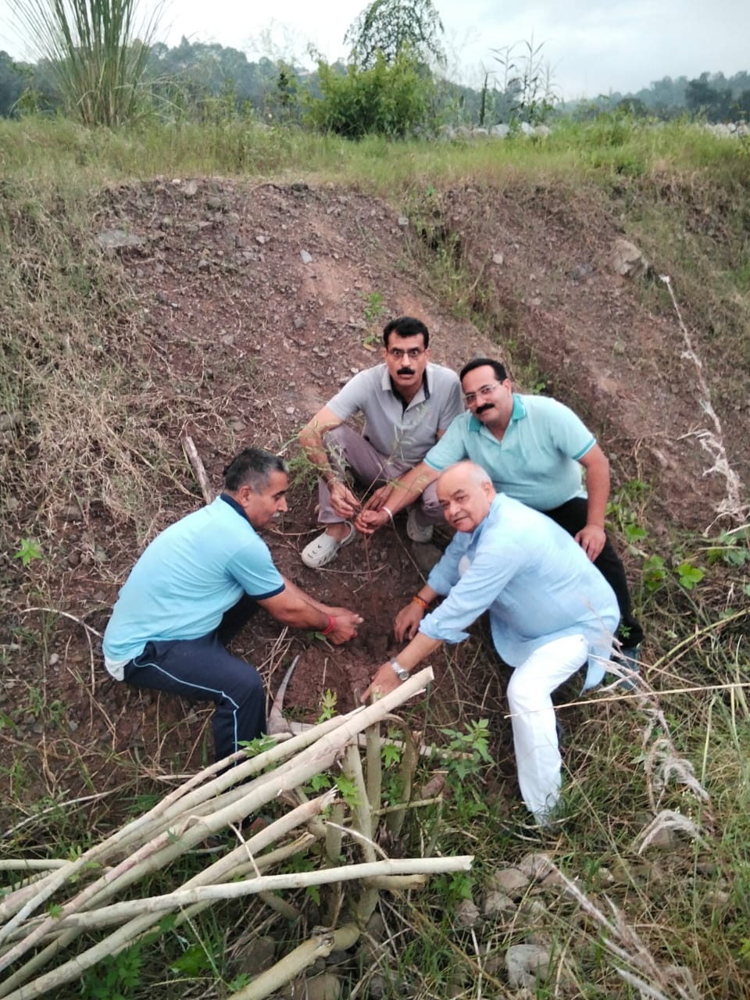

A institutional profile

Thakur Ram Singh Smriti Nyas, Himachal Pradesh is a public charitable institution established with a vision to serve society through meaningful, sustainable, and value-driven initiatives — founded in the revered memory of Shraddheya Thakur Ram Singh Ji.
His life exemplified selfless service, integrity, discipline, and an unwavering commitment to the welfare of society. His ideals form the moral and philosophical foundation upon which the Trust carries forward its work.
“सर्वे भवन्तु सुखिनः, सर्वे सन्तु निरामयाः।”
Rooted in the ethos of Bharatiya Sanskriti, the Trust operates on the principles that true development is the holistic upliftment of individuals and communities — socially, culturally, and spiritually.
The institution works with the belief that service should be visible, compassionate, and accountable. Every effort is meant to support education, health, environmental care, social welfare, and community dignity.
This is not a ceremonial organization; it is intended to be a living platform for practical service, community participation, and lasting social value.